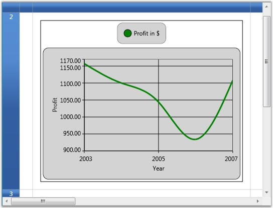

Grid provides inherent support to host chart controls. This is achieved by using Data Template cells.
Example
1. Define the Data Template that creates a chart. The template below illustrates the creation of a chart control with a single series and defines its attributes.
|
[XAML]
<local:MyDataCollection x:Key="SeriesData1"/>
<DataTemplate x:Key="DataChart">
<!--Hosting Chart control in second Row of the Grid--> <syncfusion:Chart x:Name="Chart1" Grid.Row="1" Margin="15">
<!--Chart Legend declaration--> <syncfusion:Chart.Legends> <syncfusion:ChartLegend /> </syncfusion:Chart.Legends>
<!--Chart area to present chart segments--> <syncfusion:ChartArea IsContextMenuEnabled="True" >
<!--Primary Axis(X)--> <syncfusion:ChartArea.PrimaryAxis>
<!--X axis declaration with required property settings--> <syncfusion:ChartAxis Header="Year" Interval="2" > </syncfusion:ChartAxis> </syncfusion:ChartArea.PrimaryAxis>
<!--Secondary Axis(Y)--> <syncfusion:ChartArea.SecondaryAxis>
<!--Y axis declaration with required property settings--> <syncfusion:ChartAxis Header="Profit" SmallTicksPerInterval="0" LabelFormat="0.00"> </syncfusion:ChartAxis> </syncfusion:ChartArea.SecondaryAxis>
<!--Chart 1st series declaration--> <syncfusion:ChartSeries Name="series1" Label="Profit in $" Type="Spline" StrokeThickness=" 3" Interior="Green" DataSource="{StaticResource SeriesData1}" BindingPathX="Year" BindingPathsY="Y1" IsIndexed="False"> </syncfusion:ChartSeries> </syncfusion:ChartArea> </syncfusion:Chart> </DataTemplate > |
Here is the data source definition that is used to define the chart series.
|
[C#]
public class MyData { public int Year { get; set; } public double Y1 { get; set; } public double Y2 { get; set; } public double Y3 { get; set; } public double Y4 { get; set; } } public class MyDataCollection : ObservableCollection<MyData> { public MyDataCollection() { Random rand = new Random(DateTime.Now.Millisecond); DateTime cdate = DateTime.Today.AddYears(-6); for (int i = 0; i < 5; i++) { this.Add(new MyData() { Year = cdate.AddYears(i).Year, Y1 = rand.Next(700, 1200), }); } } } |
2. Bind the above template to the grid cell to form a chart cell.
|
[C#]
var cell = grid.Model[2, 2]; cell.CellType = "DataTemplate"; cell.CellTemplateKey = "DataChart"; grid.Model.RowHeights[2] = 400d; |
Output
The following output is generated using the code above.

Figure 43: Chart Cell